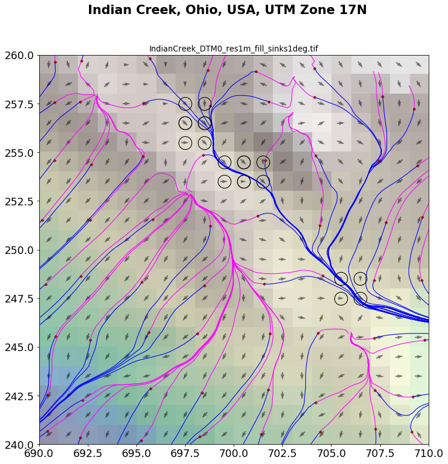

IndianCreek_Test2.ipynb¶
Demo IPython/Jupyter notebook #1
Usage¶
The Streamlines workflow is invoked in an IPython/Jupyter notebook as follows:
JSON_parameters_file = './IndianCreek_Test2'
import streamlines
sl = streamlines.run( parameters_file=JSON_parameters_file, \
do_geodata = False, \
do_preprocess = False, do_condition=True, \
do_trace = False, \
do_postprocess=False, do_analysis=False, \
do_plot=False, do_save_state=False, \
do_export=False, \
do_reload_state=False )
The default workflow options (set by defaults.json)
are do_geodata, do_preprocess along with do_condition, and do_trace;
the subsequent options do_postprocess, do_analysis, do_plot, do_save_state
and do_export are all turned off by default,
as is the do_reload_state option.
The job JSON file, in this case IndianCreek_Test2.json,
can override these defaults.
Finally, the options set as above in the invocation streamlines.run()
will override those set in the the JSON files.
Here the run options mirror the defaults and those set in the job JSON file,
such that the main streamline computational steps geodata,
preprocess with
conditioning,
and trace are executed.
The workflow state and all of its functionality are then returned in the
sl object.
Further processing can then be carried out by invoking methods provided by class instances
referenced by sl, e.g.,:
sl.postprocess.do()
sl.analysis.do()
Plotting of results can be fine-tuned:
sl.plot.do_plot_streamlines = True
sl.plot.plot_maps()
which yields:
Currently the set of class instances and public methods provided by
sl are:
dir(sl)
['analysis', 'export', 'geodata', 'inventorize', 'plot', 'postprocess',
'preprocess', 'state', 'trace']